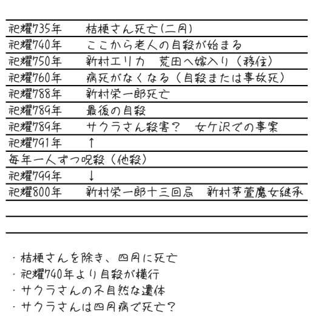
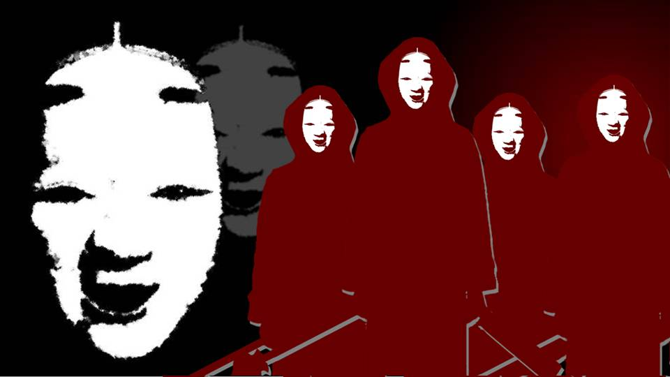

A Body That 'Is Dead'


"A... April sickness...?"
I remember it, faintly.
Apparently I always used to get sick in the season when the cherry blossoms bloom.
I remember it, faintly.
Apparently I always used to get sick in the season when the cherry blossoms bloom.

"Sakura had it too... what you'd call April sickness..."
No way! I thought that was something only I had.
No way! I thought that was something only I had.
"Sakura always got sick around this time of year.
Natsumi-chan, I'd heard you also get sick when the cherry blossoms bloom, and it was the same in Sakura's case..."

"Um... what's April sickness? This is the first I've heard of Kogori-senpai having an illness like that..."
Right... Goto doesn't know, and Haruka never had the chance to see my April sickness firsthand either.
I don't remember it clearly myself, but if Sakura-san had April sickness...
Collapsing near the cliff makes sense, then.
Right... Goto doesn't know, and Haruka never had the chance to see my April sickness firsthand either.
I don't remember it clearly myself, but if Sakura-san had April sickness...
Collapsing near the cliff makes sense, then.
"I don't think the three of you really know about April sickness.
Natsumi-chan's case I've only heard about secondhand, so I can't say whether it matches Sakura's exactly.
But one thing I can say for sure... Sakura was on top of that cliff, waiting for her own death..."

"So... she was waiting for her April sickness to flare up so she'd just collapse?"
"That's what I think. No matter how ready you are to die, jumping from there takes courage.
Maybe she couldn't bring herself to do it, and was waiting on top of the cliff to lose consciousness..."
This is far too hard a puzzle.
First of all, there are too many of what Kotaro-san calls the important 'setup.'
This is far too hard a puzzle.
First of all, there are too many of what Kotaro-san calls the important 'setup.'
No, to be precise, there are far too many elements to define any one of them as the 'setup.'
Every candidate for the 'setup' could also be a 'development,' and none of them is guaranteed to connect to the 9 years of curse-killings.
On the other hand, it would take quite a stretch to think they all connect.
Every candidate for the 'setup' could also be a 'development,' and none of them is guaranteed to connect to the 9 years of curse-killings.
On the other hand, it would take quite a stretch to think they all connect.
"Once it's gotten this far, we really need to sort things out... We already have too much information.
Let's try writing a timeline."

"Looking at it like this, it's nothing but people dying..."
"Now then, which of these would be the 'setup'..."
"Erika-chan's marrying in doesn't look very relevant, though..."
"Now then, which of these would be the 'setup'..."
"Erika-chan's marrying in doesn't look very relevant, though..."
"As I thought, after Sakura-san died, the abnormality stands out even more...
Maybe the culprit is set on making people die in April, no matter what.
Or the other way around, maybe it's inconvenient for them if people die outside April?"
"If so, we'd have to figure out why everyone other than Kikyo-san died in April..."
"That's impossible... There's not a single living witness."
"If so, we'd have to figure out why everyone other than Kikyo-san died in April..."
"That's impossible... There's not a single living witness."
"If a whole 10 people died in these 10 years, Arata's population must have dropped noticeably too, right?"
"That's true. There are maybe 20 people left now, if that..."
"That's true. There are maybe 20 people left now, if that..."
"Kotaro-san, I never went to any memorial services for these 10 people. Were they not held?"
"There's a rule that you don't touch a shinigami that was curse-killed. Because you'd be touching the curse."
"I see... It's nothing but rules around here..."
"There's a rule that you don't touch a shinigami that was curse-killed. Because you'd be touching the curse."
"I see... It's nothing but rules around here..."
―Which is the 'setup,' and which is the 'development' that follows from the 'setup'?
Or are a 'twist' or a 'conclusion' mixed in there somewhere?
From this alone, I can't make heads or tails of it.
No... the fact that I can't tell might mean...
Or are a 'twist' or a 'conclusion' mixed in there somewhere?
From this alone, I can't make heads or tails of it.
No... the fact that I can't tell might mean...
"Um, I was thinking..."
When I said that, everyone slowly turned toward me.
"Maybe... there's no such thing as 'kishotenketsu' to begin with..." [TN: Kishotenketsu: four parts, ki 'setup', sho 'development', ten 'twist', ketsu 'conclusion'.]
Everyone froze, their expressions unchanged.
More than surprised, they seemed to be questioning the idea itself...
When I said that, everyone slowly turned toward me.
"Maybe... there's no such thing as 'kishotenketsu' to begin with..." [TN: Kishotenketsu: four parts, ki 'setup', sho 'development', ten 'twist', ketsu 'conclusion'.]
Everyone froze, their expressions unchanged.
More than surprised, they seemed to be questioning the idea itself...
"I see... Not 'jo-ha-kyu,' and not 'introduction, body, conclusion' either... You mean each one is a completely separate event, with no connection between them..." [TN: Jo-ha-kyu: a three-part structure from Noh: opening, break, rapid finish.]

"In that case, if we had to define it, would the first curse-killing in Shiyo 791 be the 'setup'...?"
"No, but then it's weird that the suicides stopped, isn't it? Suicides that went on for 50 years just stopping right there..."
"But it's settled that the ones who commit suicide are people 75 and older. That's been perfectly clear for a long time."
"But it's settled that the ones who commit suicide are people 75 and older. That's been perfectly clear for a long time."
Huh...?
Wait...?
This is strange...!
No matter how you look at it, it's strange!
Wait...?
This is strange...!
No matter how you look at it, it's strange!
"This is strange! No matter how you look at it, it's strange!"
When I stood up and shouted, everyone turned their attention to me again.
"I mean, everyone kills themselves once they're past 75, right!? Why didn't the people of Arata stop them!? You knew the old people were definitely going to kill themselves, didn't you!?"
When I stood up and shouted, everyone turned their attention to me again.
"I mean, everyone kills themselves once they're past 75, right!? Why didn't the people of Arata stop them!? You knew the old people were definitely going to kill themselves, didn't you!?"

"Right...
That's right!
Then Grandma and Kotaro-san would definitely keep an eye on anyone over 75 when April came around, right!?
Why didn't you stop them!?"

"Th-that's...!"
That reaction...! Kotaro-san is hiding something!
That reaction...! Kotaro-san is hiding something!
"Kotaro-san! You really do know something, don't you!?
Why does everyone kill themselves!?
In the Arata settlement... what on earth is...!"
"............"
And at that point, Goto cut in as well.
"............"
And at that point, Goto cut in as well.
"Kotaro-san, there's important information for pinning down the 'setup' that we haven't asked you about yet."
"Wh-what is it...?"
"Did Sakura-san... really pass away?"
In that instant, I could feel the air in the room freeze.
The clear premise― in other words, the very root of the 'setup,' is what Goto is doubting.
"Did Sakura-san... really pass away?"
In that instant, I could feel the air in the room freeze.
The clear premise― in other words, the very root of the 'setup,' is what Goto is doubting.

"Ha... haha, now you're asking that...?
Kotaro-san, Sakura-san's alive...
not, right?"
"Yeah... Sakura is dead. Sh-she's certainly dead..."
What? The way he just said that.
The way he just said it feels off.
"Yeah... Sakura is dead. Sh-she's certainly dead..."
What? The way he just said that.
The way he just said it feels off.
'She's certainly dead.'
Then what words come after it?
What follows the word 'certainly' is― usually a contrast, in other words 'however' or 'but.'
Sakura-san is certainly dead, but― but what?
Then what words come after it?
What follows the word 'certainly' is― usually a contrast, in other words 'however' or 'but.'
Sakura-san is certainly dead, but― but what?
Besides, why say 'Sakura-san is dead'?
Normally at a time like this you'd say 'Sakura-san died,' right?
'Is dead' is what you say when the body is right in front of you, or when someone has only just died.
In other words― in other words, this is...!
Normally at a time like this you'd say 'Sakura-san died,' right?
'Is dead' is what you say when the body is right in front of you, or when someone has only just died.
In other words― in other words, this is...!

Suddenly a small figure came into the room.
"Daddy..."
Unsteadily, Kana-chan walked toward us.
But,
"Daddy..."
Unsteadily, Kana-chan walked toward us.
But,
she fell flat right where she stood.
"Kana! What's wrong!?"
Kana-chan's small back bore...
Kana-chan's small back bore...
a large wound that looked like it had been cut by a blade like a nata.
Kotaro-san rushed over at once and held Kana-chan in his arms.
Kotaro-san rushed over at once and held Kana-chan in his arms.
"Sis...
betrayed..."
Chiga-nee... betrayed...?
Don't tell me Chiga-nee did this to Kana-chan...
Chiga-nee... betrayed...?
Don't tell me Chiga-nee did this to Kana-chan...

"No way! Chiga-nee...
you're saying she's the one behind the curse-killings!?"
"Haruka! Calm down!"
"Haruka! Calm down!"

I caught Haruka as she was about to collapse and held her tight.
"Haruka, it's okay...! It has to be some kind of mistake!"
"N-Natsumi... but... Chiga-nee never came back after the succession rite, did she..."
"N-Natsumi... but... Chiga-nee never came back after the succession rite, did she..."
Just then, a woman came swaying into the room.

Chiga-nee was the one.
But she was injured all over, and her mind seemed hazy.
And then―
But she was injured all over, and her mind seemed hazy.
And then―
In her hand she gripped a bloody nata.
"Everyone... I'm sorry... There's no other way..."
Chiga-nee, nothing like the cheerful person she'd been earlier, stood with dead eyes, dazed.
"Everyone... I'm sorry... There's no other way..."
Chiga-nee, nothing like the cheerful person she'd been earlier, stood with dead eyes, dazed.
Chiga-nee staggered and raised the nata high.
"S-stop it, Chiga-nee...!"
Who was that nata meant for―
"S-stop it, Chiga-nee...!"
Who was that nata meant for―
No sooner had I heard the sound of flesh being cut than Chiga-nee collapsed.
Kana-chan's wound again: her back had been slashed by a large blade.
I saw it clearly.
Chiga-nee hadn't yet brought her nata down when someone behind her swung one.
Kana-chan's wound again: her back had been slashed by a large blade.
I saw it clearly.
Chiga-nee hadn't yet brought her nata down when someone behind her swung one.
"―There she is."
"―Kill her."
"―The witch who brings in the curse."
"―Kill her."
"―The witch who brings in the curse."

Filing into the room were strange figures dressed the same as Chiga-nee at the graveyard.
What? These people...
Kill who...?
The witch... who do they mean?
What? These people...
Kill who...?
The witch... who do they mean?
I wasn't even given time to think.
The strange figures all brought their nata and maces down on me at once.
The strange figures all brought their nata and maces down on me at once.
The first blow all but blew my consciousness away.
A heavy impact ran through my head, my body wouldn't obey me, and my vision was gone in an instant.
Right after, I could tell cold blades were biting into me all over my body.
Again and again, as if they held some fierce grudge against me.
I was stabbed again and again, yet I could no longer even feel pain.
A heavy impact ran through my head, my body wouldn't obey me, and my vision was gone in an instant.
Right after, I could tell cold blades were biting into me all over my body.
Again and again, as if they held some fierce grudge against me.
I was stabbed again and again, yet I could no longer even feel pain.

That's right, the curse-killing victims had their heads crushed with a single blow.
I couldn't tell whether my head had been split open the same way.
With my five senses already gone, there was no way to perceive it.
No ordinary person could strike a blow this fierce―
I couldn't tell whether my head had been split open the same way.
With my five senses already gone, there was no way to perceive it.
No ordinary person could strike a blow this fierce―

Come to think of it, I'd forgotten to ask Kotaro-san about that drug.
Could these people be using that drug?
A drug that was supposed to have been disposed of long ago?
Right... no one knows what goes on beneath the surface, as Erika-chan said.
Could these people be using that drug?
A drug that was supposed to have been disposed of long ago?
Right... no one knows what goes on beneath the surface, as Erika-chan said.
Haruka―
Goto―
Are they safe? Have they been killed?
My whole body had been wrecked so completely that I wasn't even allowed questions like that anymore.
I was nothing but bits of flesh now.
Are they safe? Have they been killed?
My whole body had been wrecked so completely that I wasn't even allowed questions like that anymore.
I was nothing but bits of flesh now.
What I felt last, in that state, was neither pain nor suffering.

'She's certainly dead.'
What follows the word 'certainly' is―usually a contrast, in other words 'however' or 'but.'
Normally at a time like this you'd say 'Sakura-san died,' right?
'Is dead' is what you say when the body is right in front of you, or when someone has only just died.
The last thing I felt was that: something of no use at all anymore.
What follows the word 'certainly' is―usually a contrast, in other words 'however' or 'but.'
Normally at a time like this you'd say 'Sakura-san died,' right?
'Is dead' is what you say when the body is right in front of you, or when someone has only just died.
The last thing I felt was that: something of no use at all anymore.
And dangling from the very end of that last thought was―
At least... why I have to go through this... tell me...
At least... why I have to go through this... tell me...
Read ✓ Next in this arc →